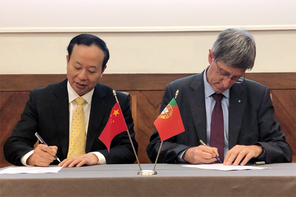

-
学校概况
-
人才培养
-
科学研究
-
招生就业
机构设置
图书馆
在校学生
教职员工
校友
首页》校园新闻
时间：2019-12-22 单位：党委宣传部 浏览量 ：1000
12月10-19日，华南理工大学党委书记章熙春率团出访 葡萄牙里斯本大学（里斯本理工大学）、西班牙加泰罗 尼亚大学以及法国巴黎第五大学，签署校级合作协议并 商谈了涉及计算机、化学、化工以及工商管理领域的具 体合作项目，开拓和深化了学校“一带一路”教育合作的 版图布局。
里斯本理工大学校长Arlindo Oliverira , 副校长Miguel Sileira会见了章熙春一行。Arlindo Oliverira介绍了该校建设与发展情况及该校对华合作 情况，期待两校能在相关领域推动务实合作。章熙春介 绍了华南理工大学的近期发展以及广州国际校区建设情况，提出“一带一路”是中国教育国际交流合作的顶层设计和中国教育走向世界舞台中央的路线图，因此华南理工大学非常珍视与葡萄牙高校的合作，创新性地提出探索“里斯本理工-澳门大学-华南理工”的三方合作交流的倡议，共同设计青年活动、学者交流或课程共建，推动“粤港澳”与“一带一路”沿线高校的人文交流，实现在更高层次、更大范围、更广领域推进教育国际合作交流全方位的发展。章熙春代表学校与该校签署了3+2本硕双向联合培养项目协议， 项目将率先在计算机和化工领域推行实施。

里斯本理工大学校长Arlindo Oliverira , 副校长 Miguel Sileira会见了章熙春一行。Arlindo Oliverira 介绍了该校建设与发展情况及该校对华合作情况，期待两 校能在相关领域推动务实合作。章熙春介绍了华南理工大学的近期发展以及广州国际校区建设情况，提出“一带一路”是中国教育国际交流合作的顶层设计和中国教育走向世界舞台中央的路线图，因此华南理工大学非常珍视与葡萄牙高校的合作，创新性地提出探索“里斯本理工-澳门大学-华南理工”的三方合作交流的倡议，共同设计青年活动、学者交流或课程共建，推动“粤港澳”与“一带一路”沿线高校的人文交流，实现在更高层次、更大范围、更广领域推进教育国际合作交流全方位的发展。章熙春代表学校与该校签署了3+2本硕双向联合培养项目 协议，项目将率先在计算机和化工领域推行实施。
附：学校介绍
巴黎第五大学 (也称巴黎笛卡尔大学Université Paris Descartes或Paris-V)是一所实力雄厚，声望很高的学府，尤其以医学，生物医学和药学著称，在人文科学领域亦有建树，是欧洲最古老的大学之一。该校以法国哲学家勒内·笛卡尔(1596~1650)的科学探索精神为指导，注重教学与科研实践，现有在校学生38,900多名，教学及科研人员3400多位。2019上交排名151-200。目前，巴黎五大，巴黎七大和巴黎地球物理研究所正在合并过程，2020年1月将正式组建为巴黎大学，届时综合排名将跃居法国第三。
加泰罗尼亚理工大学（Universitat Politècnica de Catalunya），简称UPC，是西班牙最顶尖的理工科大学，同时也是一所欧洲顶尖、享誉世界的理工科院校。2019年QS排名275。建筑，土木工程，电气与电力工程，电信工程等学科位列上交与QS排名世界前50。
UPC专注于工程与自然科学前沿领域的研究，其高质量的教学与科研水平在国际上具有很高的知名度。UPC拥有18个学院， 27951名学生和3147名教学与研究人员，2006名行政工作人员。2019年科研经费为29.5亿欧元，研发收入为5.8亿欧元，2018年获批专利15项。
华南理工大学 版权所有 党委宣传部主办 Copyright © 2018 www.scut.edu.cn All Rights Reserved
粤ICP备05084312号